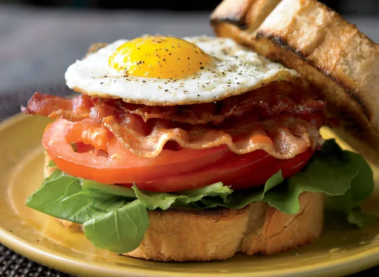

The Ultimate BLT
Home

Description
Is there any combination as rewarding and perfectly calibrated as a bacon, lettuce, and tomato sandwich? With
the crispy, smoky bacon playing off the cool crunch of the lettuce and the acidic sweetness of ripe tomato,
it's a top contender for Last Meal on Earth status. Bog down the BLT with bulky, sweetened bread and a sea
of mayo, though, and the appeal vanishes—just as the caloric toll rises.
Ingredients
- 1 egg
- 2 slices 7-grain or sourdough bread, lightly toasted
- Handful of arugula (There's been much debate over the perfect lettuce for a BLT. Some prefer the crunch of iceberg or romaine, others like leaves with a peppery bite, like watercress or arugula. It's your choice.)
- 3 thick slices of tomato
- 4 strips of bacon, cooked
- Salt and black pepper to taste
Steps
- Heat a small nonstick skillet over medium heat.
- Coat with olive oil cooking spray and add the egg.
- Cook sunny side up until the white is set but the yolk is runny.
- Line the bottom half of the bread with the arugula, followed by the tomato slices and bacon.
- Set the cooked egg carefully on top, and season with a pinch of salt and plenty of fresh cracked pepper.
- Top with the second slice of bread.